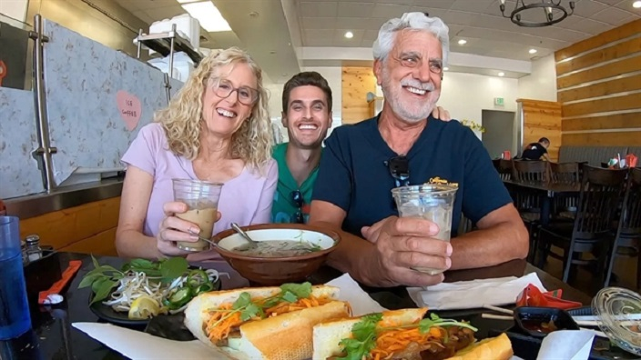

Hanoi cuisine - a distinctive cultural product of Vietnam
For decades, Hanoi's cuisine has been considered as a cultural heritage, encompassing both material and spiritual elements, from ingredients, flavors, cooking art to dining etiquette.

Foreign tourists enjoy “banh mi” (Vietnamese baguette) and coffee in the country. Photo: vietnamnet.vn
Hanoi's culinary scene not only captivates tourists from far and wide but also wins over many world leaders such as former French President Francois Hollande, former US President Barack Obama, President of the Republic of Korea Yoon Suk Yeol, Dutch Prime Minister Mark Rutte, US Secretary of State Antony John Blinken, and reputable chefs like the late Anthony Bourdain.
Many dishes have been honored by foreign travel guides and included in travel handbooks for visitors to Hanoi. This serves as a driving force for Hanoi to further explore its culinary culture, bringing it closer to both domestic and foreign diners, and transforming cuisine into a competitive cultural industry product.
For decades, Hanoi's cuisine has been regarded as a cultural heritage, encompassing both material and spiritual elements, from ingredients, flavors, cooking art to dining etiquette. Its distinctive characteristics not only reflect the depth of the city's culture but also bring about socioeconomic benefits, popularizing the image of Hanoi and drawing tourists at home and abroad to the capital.
Many visitors to Hanoi aspire to indulge in its cuisine, especially traditional dishes steeped in cultural identity. Among these renowned delicacies are pho (noodle soup), nem Hanoi (Hanoi-style spring rolls), bun oc (snail noodles), banh tom (crispy shrimp pancakes), cha ca (grilled fish), bun thang (noodle soup with chicken and egg), bun cha (grilled pork with noodles), com (green rice flakes), and ca phe trung (egg coffee).
Exploring the Hanoi Old Quarter in the evening reveals bustling food streets such as Ta Hien, Ma May, Cau Go, Dong Xuan, Luong Ngoc Quyen, Tong Duy Tan, and Hang Cot, all crowded with tourists. Leveraging this advantage, Hanoi has developed numerous food streets to drive tourism growth. In addition to the culinary streets in the Old Quarter, the city also features night food streets combined with walking routes on Ngoc island – Ngu Xa, food streets around the West Lake, and traditional food restaurants.
In 2023, Hanoi had 48 out of 103 restaurants selected by the Michelin Guide (the most prestigious culinary guide in the world), including three restaurants awarded with 1 Michelin star. TripAdvisor voted Hanoi as one of the top 25 culinary destinations globally in 2022 and ranked it third on the list of 20 destinations for food enthusiasts in 2023.
Assoc. Prof. Pham Quynh Phuong, head of the Department of Cultural and Creative Industries and the Faculty of Interdisciplinary Sciences at the Vietnam National University - Hanoi, said within the ecosystem of cultural industries, one cannot overlook cuisine as it is a significant material and spiritual cultural element in the intersection between culture and economy.
Many researchers also argued that cuisine is becoming a competitive advantage and a decisive factor in building the brand for a country or a tourist destination. Italy is known not only for its Renaissance art heritage but also the homeland of pizza. France is not only a country with a rich cultural and historical tradition but also the birthplace of classical cuisine with cheese-making techniques. China is renowned for its four major culinary traditions, namely Cantonese, Shandong, Sichuan, and Jiangsu.
In reality, Hanoi possesses numerous potentials and advantages to develop cuisine into a cultural industry product, although over the past years, the exploitation of its cuisine for the development of a new cultural industry has only reached the initial stages, lacking a comprehensive and specific plan. However, in 2022, the municipal Hanoi Party Committee issued a resolution on developing cultural industry in the capital during the 2021–2025 period, with orientations to 2030 and vision to 2045, in which cuisine is identified as one of the areas with great potential and advantages for local cultural industry development.
Director of the municipal Department of Culture and Sports Do Dinh Hong underlined the importance of awareness on positioning, developing plans for exploitation, and investing in the culinary sector to meet its potential.
"There are currently many culinary competitions, but they only stop at the level of game shows (television games), failing to create significant cultural value for development. Hanoi needs to tap into the essence of its cuisine to develop it into a valuable cultural industry product," said Hong.
So far, Hanoi has held various activities to tap into and popularize culinary cultural values among both domestic and foreign tourists. The space introducing Hanoi cuisine under the theme "Vietnamese culinary essence" is held annually, bringing together professional associations, artisans, businesses, and culinary establishments, presenting delicious dishes from Hanoi and across the country. The annual Hanoi Culinary Culture Festival has honored, preserved, and promoted the culinary values of Hanoi, effectively building and exploiting cultural, culinary, and tourism brands.
Hanoi's culinary service products will be diversified, focusing on unique types such as night food streets, culinary craft villages, alongside restaurants to meet the needs of both domestic and foreign tourists. The municipal Department of Tourism plans to create a food tour map for tourists to explore and experience cuisine on their own.
Assoc. Prof. Nguyen Thi Anh Quyen from the Hanoi University of Culture believed that the capital city needs to develop a strategy and plan to promote culinary culture linked with the development of cultural industries, so that districts and communes can use them as a basis to roll out plans.
"The city should plan and invest in building food tours, focusing on key culinary cultural products and identifying target tourist markets to build appropriate and effective promotional programs. Hanoi should also hold events, exchange activities, and cooperate domestically and internationally in culinary culture; perform supportive policies and develop startup ecosystems, especially in the field," said Quyen.
Hanoi has long been renowned as a haven for food enthusiasts, and its cuisine possesses a unique charm rarely found elsewhere. To transform the distinctiveness of Hanoi cuisine into a valuable cultural product, local and Government policymakers are advised to study and invest correctly, starting from now.